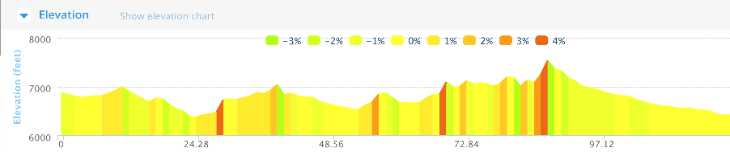
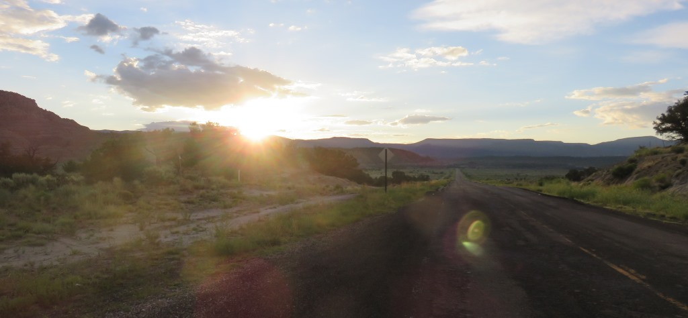
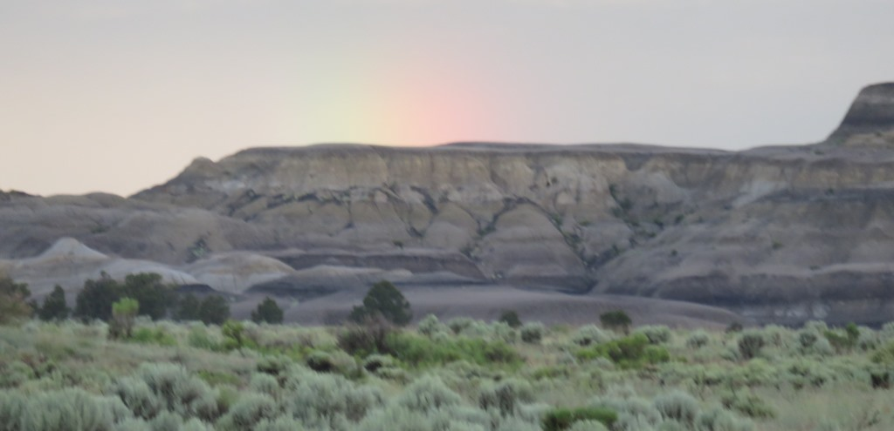
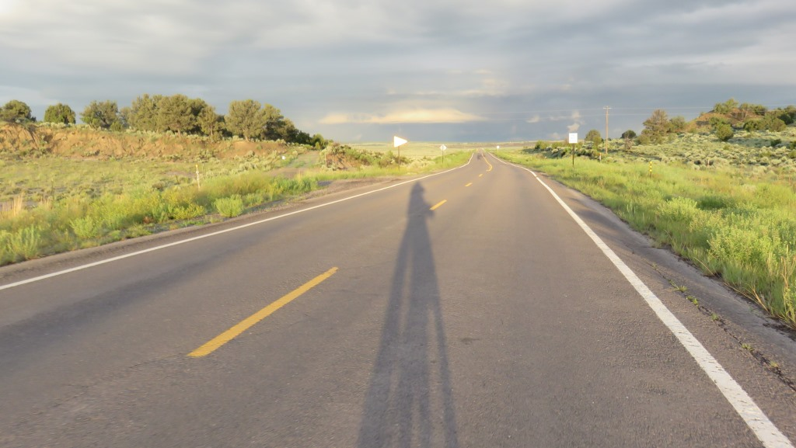
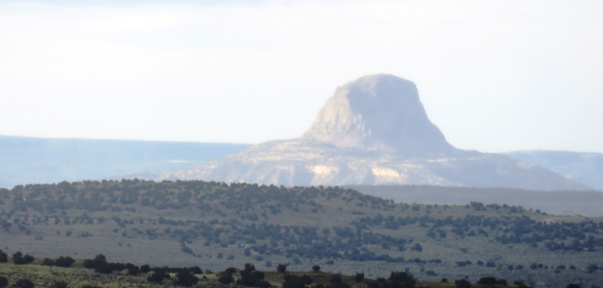
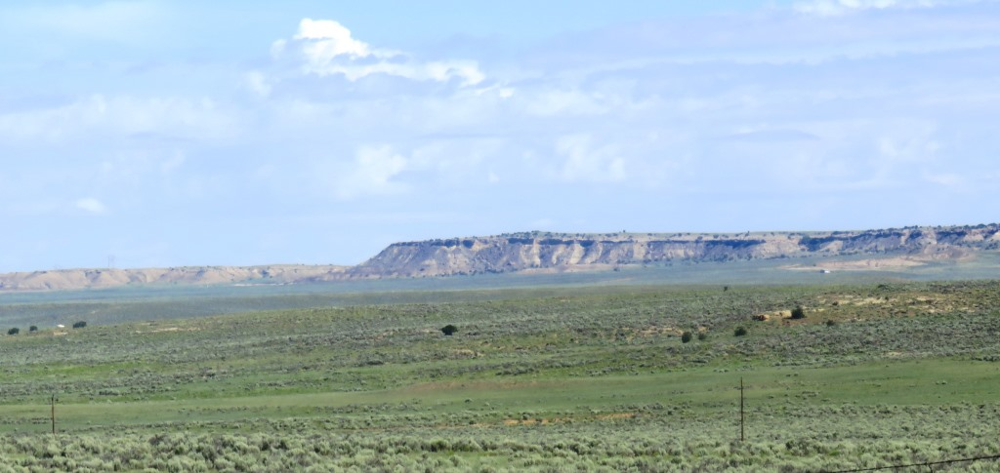
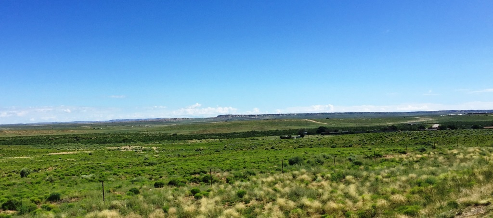
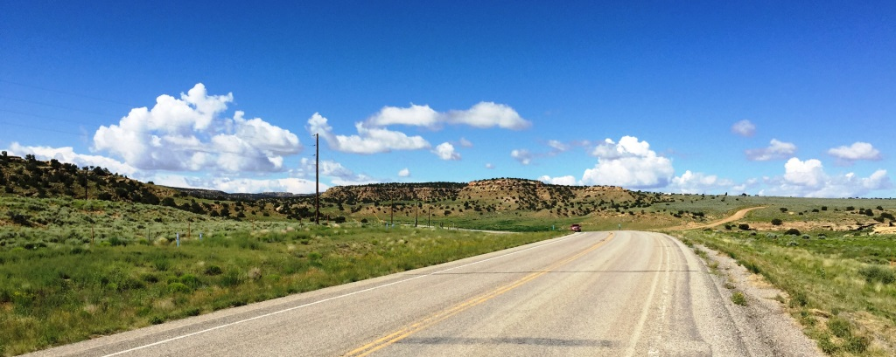
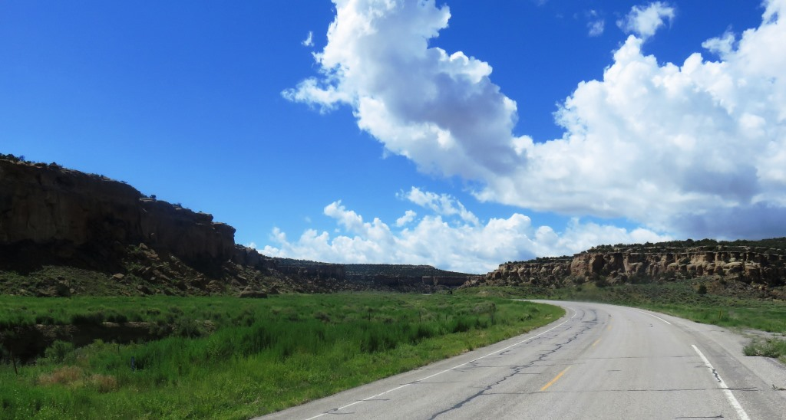
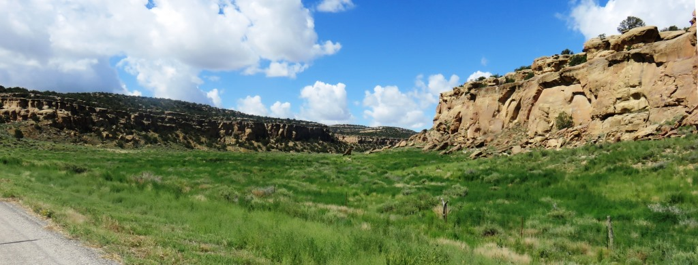

Early start from Cuba
I was trying to go 120 miles to Grants, NM and therefore I was on the road before 6am. I also was trying to get my miles in before the afternoon winds and rain picked up. There was a nice sunrise at my back.
 Sunrise over Cuba at about 6am
Sunrise over Cuba at about 6am

 A rainbow was trying to break through.
A rainbow was trying to break through.
Heading into the rain

Behind me it was sunny
1

Up ahead there were rainbows
2

But also some clouds
3

The clouds delivered an early shower
4
Once I got through an hour or so of rain the land leveled out.

It was hard to tell what the terrain ahead was going to deliverSome canyons all around so the road continued to roll up and down. By 8:30 in the morning I reached the last spot for supplies and went in for coffee. I hadn't used up much of my gatorade so there was no need to buy more. The rain had kept the temperature down.
I crossed the continental divide 4 times during the day but barely noticed since the entire area was so flat there was very little differentiating one rise from another.
The first 50 miles was heading west and I was hoping that I would turn south before the wind picked up

No big hills - Just steep enough to make you stand and push over the hump and then get a bit of a downhill.

Wide open spaces

Couldnt always tell what was ahead but knew it was going to be a long day

Not much more to sayRolling up thru desert
A change in the terrain once I was heading south I was also gradually climbing.
There was a 25 mile section which was generally rolling up and occasionally had sections that were pretty steep.

A couple of these came after the 80 mile mark and after I had put on my rain gear and then taken it off a couple times.

I didn't realize how close to the top I was when I flagged down a white pickup and he actually stopped.
Heading down into the New Mexico's July tsunami
 My ride down into Grants
My ride down into Grants
This guy picked me up and we put my bike in the back of his truck for the final 28 miles into Milan, NM. We had a nice talk and I avoided the thunderstorms and other weather that seemed imminent at the time. By the tume we reached Milan the sun was out and it was a beautiful afternoon.
Once he dropped me off at the truck stop in Milan I still had 4 miles to go. It was a nice time of day and I stopped to dry my stuff out, talked to my wife and got something to eat. Before I knew it a huge storm was blowing in from the exact direction I needed to go. The next four miles were as tough as any on the trip. I was going down hill into Grants and pedaling as hard as I could into a 25-30 mph wind. The rain started during the last one-half mile before I arrived at the Grant's Comfort Inn.
July 10 - 120 miles - Cuba to Grants
The wind continued to blow until later in the evening. In the morning there really wasn't much wind. It would switch back on about noon each day from here on out.
See full screen map To go places and do things that I've never done before – that’s what living is all about.Text by Jim O'Brien . Photographs by Jim O'BrienTD on Flickr.